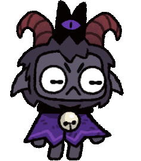

Personajes
Cordero
El Cordero puede ser un líder benevolente o cruel, cuidando a los seguidores, alimentándolos y sanándolos, o sacrificándolos y sometiéndolos a trabajos extremos. Sus doctrinas, como la caníbal, afectan las acciones disponibles. A pesar de su naturaleza oscura, también puede mostrar cariño, bendiciendo o casándose con sus seguidores. Su lenguaje corporal refleja su estado emocional, mostrando enojo o tristeza, especialmente cuando pierde a un seguidor.
Cabra
The Goat es más travieso y agresivo que The Lamb, mostrando estas diferencias en sus reacciones y expresiones. En el tráiler de Unholy Alliance, demuestra su fuerza al apartar a The Lamb y derrotar enemigos de un solo golpe. Aunque parece preocuparse por el culto y se muestra alegre al bendecir o inspirar a los seguidores, su constante sonrisa maliciosa deja en duda si sus intenciones son realmente genuinas.
